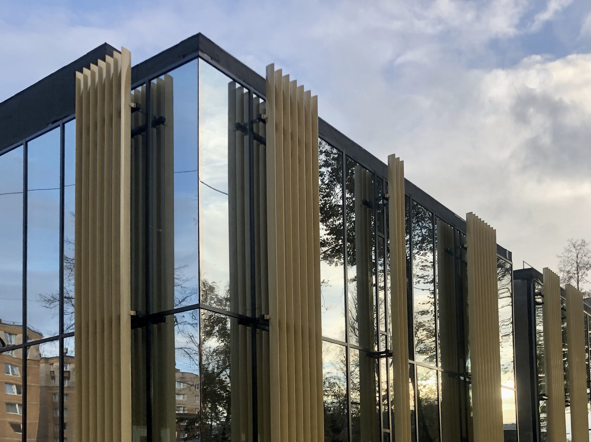
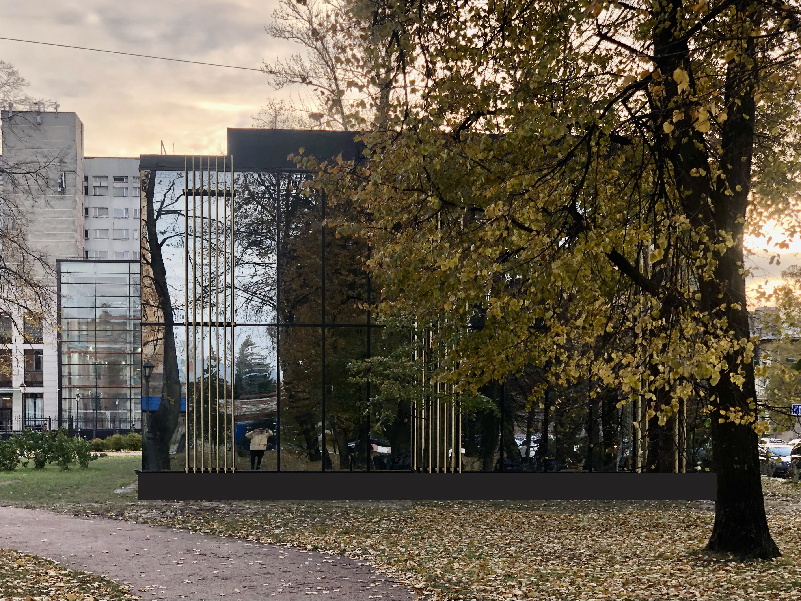
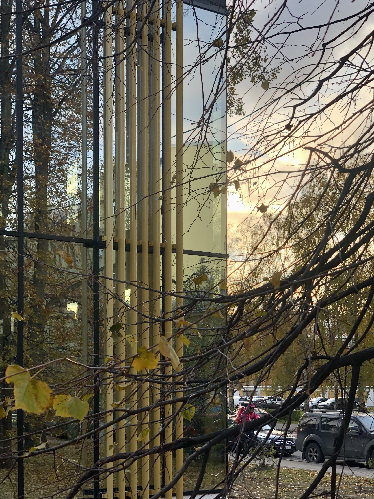
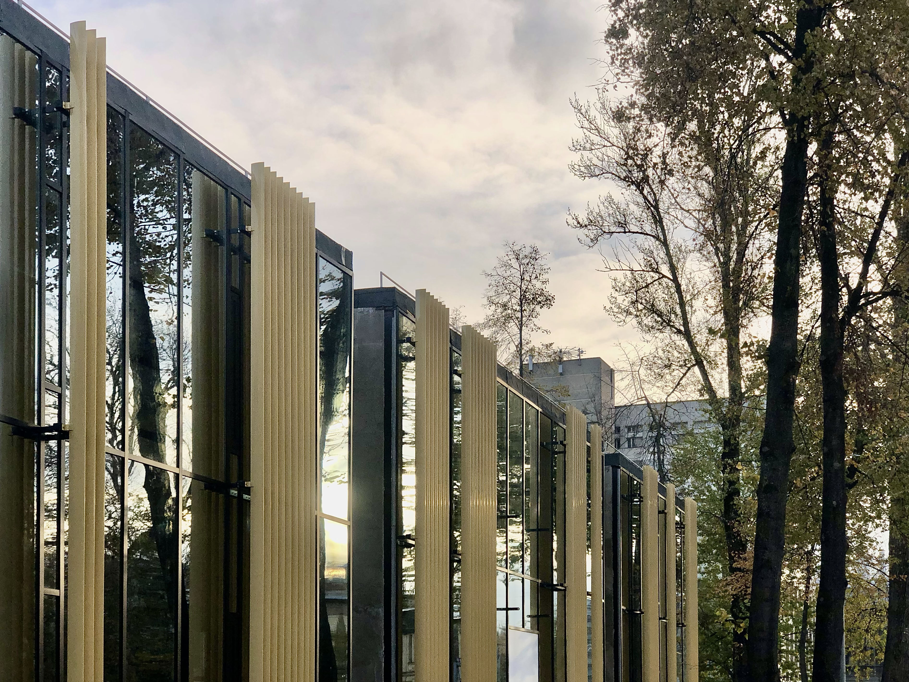

ОФИС ДЕВЕЛОПЕРА
Архитектурный проект офисного здания для девелоперской компании в Санкт-Петербурге.
Полностью стеклянный фасад отражает историческую застройку, дополнен вертикальными золотистыми ламелями, которые формируют ритм здания и создают меняющийся образ в окружении деревьев.


